(1) Die physikalische Größe für die Beschreibung des Ausmaßes einer Exposition durch Hand-Arm-Vibrationen ist der Vibrationsgesamtwert ahv. Er wird bestimmt als Quadratwurzel aus der Summe der Quadrate der Effektivwerte der frequenzbewerteten Beschleunigung in den drei Einwirkungsrichtungen x, y und z.
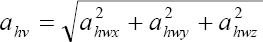
(2) Die Beurteilung von Vibrationen erfolgt über das sogenannte Energieäquivalenzprinzip. Das bedeutet, dass zwei verschiedene Vibrationsexpositionen die gleiche Wirkung haben, wenn ihre Produkte aus den Quadraten der Vibrationsgesamtwerte und der jeweiligen Einwirkungsdauer gleich sind. Auf diese Weise lassen sich alle Vibrationsexpositionen auf eine tägliche Arbeitsschicht von acht Stunden normieren. Es gilt die Beziehung
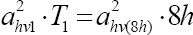
wobei ahv1 der Vibrationsgesamtwert und T1 die Einwwirkungsdauer der zu normierenden Vibrationsbelastung sind. Der Ausdruck ahv(8h) ist der auf acht Stunden bezogene Vibrationsgesamtwert, der die gleiche Wirkung entfaltet wie der Vibrationsgesamtwert ahv1 in der Einwirkungsdauer T1.
(3) Um den Tages-Vibrationsexpositionswert A(8) zu einer Vibrationsexposition mit einem Vibrationsgesamtwert ahve und einer Einwirkungsdauer von Te zu bestimmen, ist die obige Formel umzustellen:
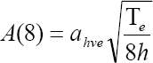
(4) Oft haben Beschäftigte an einem Arbeitstag nicht nur eine Aufgabe mit Vibrationsbelastung auszuführen. Der Tages-Vibrationsexpositionswert A(8) wird dann über die folgende Formel bestimmt, wenn der Beschäftigte an einem Tag mehrere Tätigkeiten mit Vibrationsbelastung ausübt:
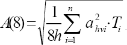
(5) Der Tages-Vibrationsexpositionswert A(8) ist die Summe aus den Teil-Vibrationsexpositionen für die verschiedenen Vibrationsquellen i mit den Vibrationsgesamtwerten ahvi und den zugehörigen Teil-Einwirkungsdauern Ti.
Die Tages-Vibrationsexposition A(8) für einen Arbeitnehmer, der eine Tätigkeit mit Vibrationsexposition ausübt oder ein vibrierendes Werkzeug bedient, lässt sich aus der Vibrationsintensität in Form des Vibrationsgesamtwerts und der Expositionszeit mit Hilfe folgender Gleichung errechnen:
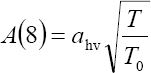
Hierin sind ahv die Vibrationsintensität (in m/s²), T die tägliche Dauer der Exposition gegenüber dieser Vibrationsintensität ahv und T0 die Bezugsdauer von acht Stunden. Wie bei dem Vibrationsgesamtwert ahv ist die Einheit der Tages-Vibrationsexposition Meter pro Sekunde im Quadrat (m/s²).
Beispiel Ein Forstarbeiter arbeitet insgesamt 4½ Stunden/Tag mit einem Freischneider. Die Vibrationen am Freischneider im Betrieb liegen bei 4 m/s². Die Tagesexposition A(8) beträgt: 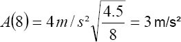 Die vorgenannte Tages-Vibrationsexposition von 3 m/s² liegt oberhalb des Auslösewertes, aber unterhalb des Expositionsgrenzwertes. Die entsprechenden Maßnahmen nach LärmVibrationsArbSchV ("gelber" Bereich) sind zu veranlassen. |
Ist eine Person mehr als nur einer Vibrationsquelle (Maschine) ausgesetzt, wird eine Teil-Vibrationsexposition aus der Größe und der Dauer für jede Quelle errechnet.
Die tägliche Gesamtvibrationsexposition kann aus den Werten für die Teil-Vibrationsexpositionen errechnet werden unter Verwendung von:
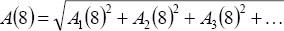
Hierin sind A1(8), A2(8), A3(8) usw. die Werte für die Teil-Vibrationsexpositionen der jeweiligen Vibrationsquellen.
Beispiel Ein Putzschleifer arbeitet an einem Arbeitstag mit drei Maschinen, und zwar mit: einem Winkelschleifer: 4 m/s² während 2½ Stunden einer Winkelfräse: 3 m/s² während 1 Stunde einem Meißelhammer: 20 m/s² während 15 Minuten Die Teil-Vibrationsexpositionen für die drei Aufgaben liegen jeweils bei:
Die Tages-Vibrationsexposition beträgt dann
Die vorgenannte Tages-Vibrationsexposition von 4,3 m/s² liegt oberhalb des Auslösewertes, aber unterhalb des Expositionsgrenzwertes. |
Das Management der Exposition gegenüber Hand-Arm-Vibrationen lässt sich durch die Verwendung eines Systems mit Expositionspunkten vereinfachen. Für jedes Werkzeug bzw. jeden Prozess lässt sich die Anzahl der in einer Stunde gesammelten Expositionspunkte (PE,1h in Punkten pro Stunde) über den Vibrationsgesamtwert ahv in m/s² ermitteln:
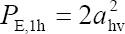
Expositionspunkte werden einfach addiert, so dass man für jede Person die maximale Anzahl von Expositionspunkten an einem Tag festlegen kann.
Die den Auslöse- und Expositionsgrenzwerten entsprechenden Expositionspunkte sind:
Im Allgemeinen wird die Anzahl der Expositionspunkte PE wie folgt definiert: 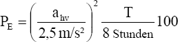 Hierin sind ahv das Ausmaß der Vibrationsexposition als Vibrationsgesamtwert in m/s² und T die Expositionszeit in Stunden. (siehe auch Tabelle der Expositionspunkte) |
Die Tages-Vibrationsexposition A(8) lässt sich aus den Expositionspunkten berechnen: 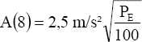 |
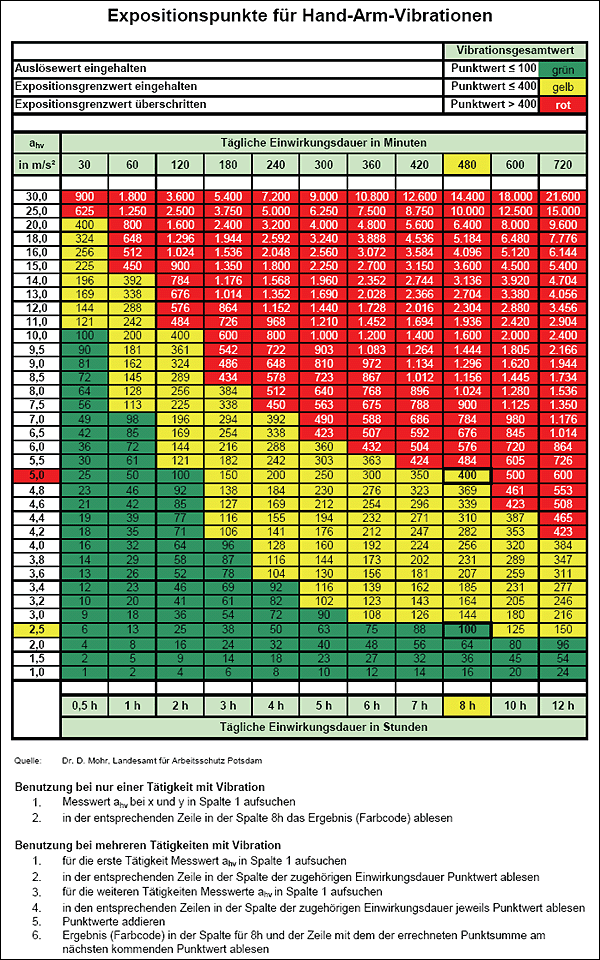
(Hinweis: Hierbei handelt es sich um dasselbe Beispiel wie vorher unter Verwendung der Expositionspunkte-Methode)
| Schritt 1: | Bestimmen Sie für jede Aufgabe bzw. jedes Werkzeug die Punktwerte unter Verwendung der Tabelle mit den Expositionspunkten auf der Basis des Vibrationsgesamtwerts und der Expositionszeit. |
| Schritt 2: | Ergänzen Sie die Punkte je Maschine, um die täglichen Gesamtpunkte zu erhalten. |
| Schritt 3: | Der höchste Wert der drei Achsenwerte ist die Tages-Vibrationsexposition in Punkten. |
|
Beispiel Ein Putzschleifer arbeitet an einem Arbeitstag mit drei Werkzeugen, und zwar mit
|
| Schritt 1: | Ermitteln Sie für jede Maschine bzw. jeden Arbeitsvorgang die Werte "Punkte je Stunde", und zwar aus Herstellerangaben, sonstigen Quellen bzw. Messungen. |
| Schritt 2: | Bestimmen Sie für jede Maschine bzw. jeden Arbeitsvorgang die täglichen Punkte. Hierzu multiplizieren Sie die Anzahl von Punkten je Stunde mit der Anzahl an Einsatzstunden der Maschine. |
| Schritt 3: | Die Summe der Punktwerte für die einzelnen Maschinen bzw. Arbeitsvorgänge ist die Tages-Vibrationsexposition in Punkten. |
|
Beispiel Ein Putzschleifer arbeitet an einem Arbeitstag mit drei verschiedenen Werkzeugen, und zwar mit:
|